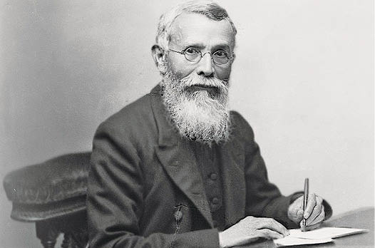

Dadabhai Naoroji

Born: 4 September 1825, Navsari
Died: 30 June 1917, Mumbai
Organizations founded: Indian National Congress, Zoroastrian Trust Funds of Europe, National Congress, London Indian Society
Famously Known As: 'Grand Old Man of India' and 'Unofficial Ambassador of India
Born on 4th September 1825, was a Mathematics and Natural Philosophy professor. He was
educated at the Elphinstone College in Bombay. He turned towards politics later in life and
became very active in the field. His opinion was unfavourable and he felt that the British rule
would leave and cause irreparable damage to the Indian economy. In the years 1886, 1893 and
1906, Dadabhai Naoroji had the privilege of presiding over the annual sessions of the Indian
National Congress. This later led to the nationalist movement in India. His popular writings
include the article named Poverty and Un-British Rule in India (1901). In this article, he was of
the strong belief and opinion that India was taxed at a very high rate and all of India's wealth
was being drained to England.
Born in Mumbai in 1825 in a Gujarati-speaking Parsi family, Naoroji was educated at Elphinstone Institute School
before pursuing a career as an intellectual and campaigner for Indian causes. At a time when the East
India Company was ruling British India, Naoroji was laying the foundation of India's
contemporary freedom struggle, establishing India's first political association,
the Bombay Association, in 1852. In 1855 he was appointed Professor of Mathematics and
Natural Philosophy at Elphinstone College in Mumbai. The first Indian to be given an academic appointment,
he was called 'The Promise of India' by another professor at the institution.
Shortly after he travelled to London to join the first Indian business firm of the mercantile Cama family,
opening a Liverpool location for Cama & Co, the first Indian company to be established in Britain. However,
within three years he had resigned on ethical grounds and by 1859 had established his own cotton
trading company, Dadabhai Naoroji & Co. Alongside this he was also made Professor of
Gujarati at University College London (1856-65).
In 1867 he went on to help establish the East India Association which aimed to combat prevailing views
of the Asians as inferior and put the Indian point of view before the British public.
The organisation eventually merged with the Indian National Association in 1885,
becoming the Indian National Congress - the main nationalist party that campaigned for
Indian independence from British rule, later the party of Gandhi and still a prominent party in
Indian politics today. Meanwhile, in 1874, having returned to India, Naoroji had started his public life as
the Dewan (minister) to the Maharaja of Barado and later was a member of the of the Legislative Council of Mumbai.